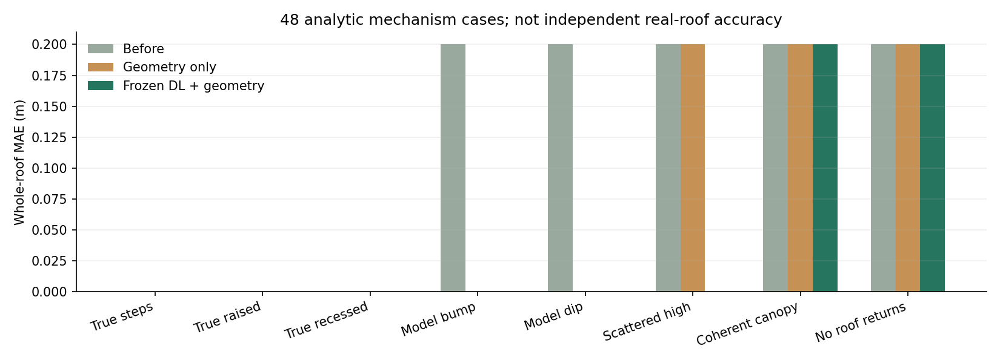

04 / 局部修正 · 开发验证 / 2026-10-22
修正局部错误，
保留真实平台高差。
原始点不动。用冻结的点云 MLP 判断点的屋顶倾向，再用邻接屋面的原始观测支持，提出局部平面重新归属候选。
本轮得到什么
8 栋真实 NAIP＋3DEP 建筑
读取中…局部替换候选 / 通过壳体边检查
48 个解析屋顶机制案例，非真实 GT
这是可执行的修正基线，还不是新训练的 DL 修正头。真实 8 栋没有独立屋顶 GT。通过边关联与方向检查只说明该诊断未报错，不证明屋顶准确，也不等于实体有效性认证。
组件内部证据不足就不改；整块遮挡不自动补成平面。替换平面来自既有观测拟合，保留其他屋面、真实高差和足迹内环；墙面随局部连接重建。
先看 67521425：哪些地方改了，哪些没有
在两组间切换，叠加同一批原始回波。默认保存的 NAIP 可离线于在线瓦片服务查看；也可切换卫星／OSM，复制坐标或打开街景。没有给原始点新增、删减或移动 XYZ。
“修正候选”包含推断几何，尚未确认为真实屋顶；原始点云始终是实测回波。表中通过数只反映壳体边诊断。
8 栋逐栋审查
| 建筑 / 定位 | 候选组件 | 通过边检查 | 大屋面最大高程改动 | 原始点改动 |
|---|
67521425 的局部证据与未解决部分
屋顶得分并非人工标签。支持点位于同一平面，也不能单独排除平台设备或其他细节。候选区域没有观测支撑的部分仍是外推，须结合更合适的影像或独立 GT 检查。
已知屋顶形状，能否修正鼓包／凹陷而不抹平真实结构
6 个固定随机种子 × 8 种情形。构造有已知高差和坡度的解析屋顶，加入点噪声、散乱高点或连续平面干扰，再单独在初始模型中制造错误。输入修正器的只有点、初始模型和冻结得分；真值只用于生成与评分。
这些案例验证处理机制。它们不是 3DBAG 真实建筑、不是独立美国测试集，也不能据此宣称生产精度；本轮没有新增训练。
| 情形 · 各 6 例 | 修正前 MAE m | 仅几何 m | 冻结 DL＋几何 m | DL 改动 / 受损 |
|---|
MAE 在整栋解析屋顶的同一 6,000 个 XY 查询点上计算。错误区域占屋顶约 6.7%，设定错误高差为 3 m，因此整栋修正前 MAE 为 0.200 m。受损指相对原模型 MAE 增加超过 0.02 m。

下一步值得学的是“点的可靠性＋屋面归属”。仅给点贴树木标签仍不足以解决连续、近似平面的假结构；还需要组件内部支持、邻接结构、光学边界及时间差证据共同判断。
数据、实现边界与复现
具体规则与尚未完成的能力
冻结 ISPRS 点云 MLP 输出屋顶分数。可信锚面至少有 30 个高屋顶得分支持点、面积至少 10 m²；待修区域面积不超过 80 m²。邻面替换须有至少 6 个位于组件内部、距拟合平面不超过 0.25 m 的高分原始点，较原屋面多至少 4 点且达到 1.25 倍支持。规则为本轮开发设置，尚未在独立目标数据上校准。
原始锚面来自观测拟合；局部重拟合用于比较支持，输出沿用原锚面参数，避免产生细小接缝。未修改大屋面的高程，只重建必要的垂直连接。质量检查失败时，检查后导出保留修正前模型；候选单独保存。
当前没有新训练的结构修正头、光学边界确认、跨时相变化判别或完全遮挡的学习补全。NAIP 2014-09-27 与 LiDAR 2014-04-24 相差 156 天。真实实验的观测参与选择与拟合，不能充当独立精度验证。